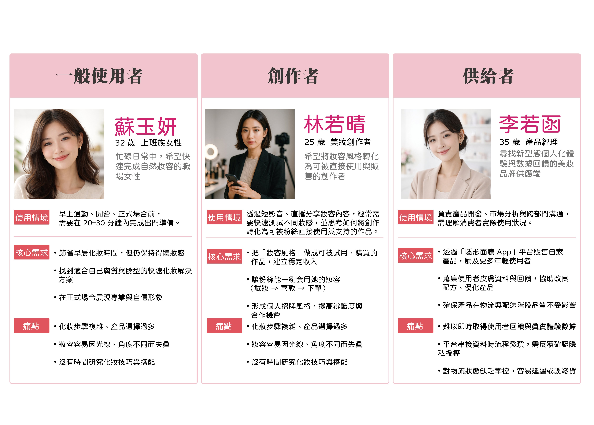
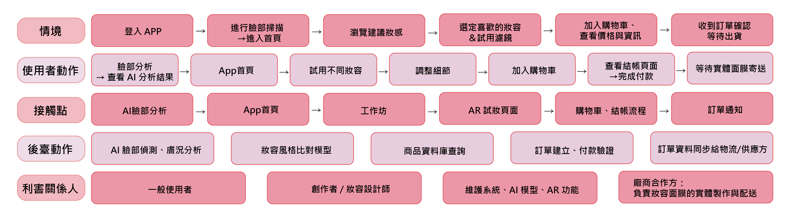

Invisible Mask
UIUX

Project Info
類型｜UI / UX Design
創作形式｜團隊專案
專案名稱｜Invisible Mask
成果｜第23屆育秀盃 入圍
Concept
隱形面膜技術能夠像隱形面膜一樣，瞬間打造完整的妝容。 隱形面膜可能會改變人們使用化妝品的方式，但它不會取代傳統的化妝品市場。 未來，依然會有人享受傳統的化妝過程和化妝的創意樂趣，他們會繼續購買化妝品。 隱形面膜的作用在於將化妝轉化為可以即時使用且易於分享的形式。它讓更多人能夠以最少的時間和精力打造得體、隨時可用的妝容。
User Understanding
透過使用者訪談與調查，整理出使用者在日常化妝中的行為、需求與痛點， 並進一步建立人物角色與同理心分析，作為後續設計依據。


Empathy Map

User Flow & Service


Team
周書妤(Yuki)
UX 設計、流程規劃、專案推進
負責使用者體驗架構建立，將概念轉化為具體操作流程，
並在專案過程中持續協助團隊聚焦方向與整合設計決策。
楊羽新
概念發想、創意發展
為專案初期核心發想者之一，後續持續參與討論，
協助發展創新概念並提供多方向設計思考。
黃翊禎
UI 設計、視覺呈現
負責介面視覺設計與畫面細節調整，
建立整體 UI 風格與視覺一致性。
蘇郁鈞
概念發想
參與專案初期發想階段，
提供基礎方向與概念構成。